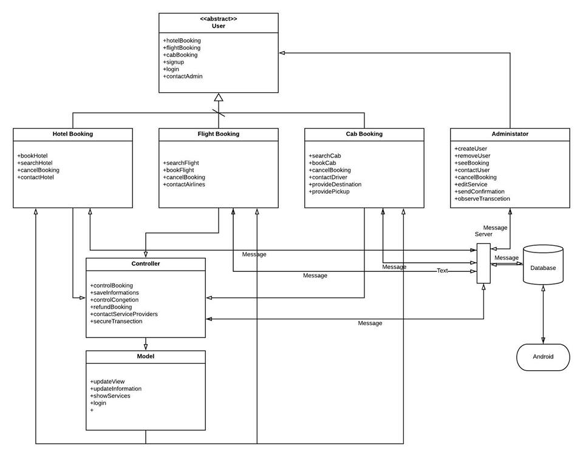
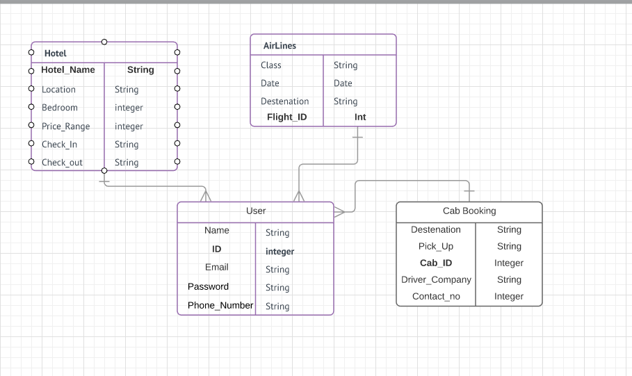

Introduction
Purpose
The purpose of this document is to give a detailed description of the development for the “What a Trip” software. It will illustrate the purpose and complete declaration for the development of system. It will also explain system constraints, interface and interactions with other external applications. This document is primarily intended to be proposed to a customer for its approval and a reference for developing the first version of the system for the development team
Intended Audience and Reading Suggestions
The intended audience of this Document is potential investors and also developers as they can see this and have a proper idea about the project. The suggested reading of this document is in order as presented and people who wants to have a quick look can have a look at the index and can easily find the material and have that
Product Scope
We are currently living in a time when the world is a global village and so people are more and more travelling to the different parts of this world. But travelling is not easy. It comes with hassles like booking flights and hotels and planning the trip efficiently and so on. That’s where our software comes in. It is our goal to make this software a one stop solution for all the travelling needs. We are planning to build a software that will be able to book flight and hotels as per requirements from the customer and will help to deal with planning the trip, taking all the hassles away from customers so that they can enjoy the trip.
The software will have a both online and an android presence. We primarily hope to implement a one stop solution for travelling needs. By signing up in our website people can search for desired flights and hotels and book them at ease.
They can search for flights via various parameters like class or date and time also book and cancel the flight as they wish.
Same sort of function will be available for booking hotels like search based on quality of hotel and locations and various other parameters that will be discussed in detail in the next sections
We are also aiming to make the software user friendly and useful from an employee perspective as they will be able to get the users data, suggest package and get details about various deal and show them with ease.
Also we are also looking to implement and improve the software for admins giving them the tools necessary to maintain the software and interact and troubleshoot various aspect.
In the upcoming section all these will be discusses in detail.
Objective
What a Trip will help the user to find hotels, tour deals, flights etc. and let them book flight tickets, book hotel room and buy tour packages. It will also show the user any nearby hotel close to their locations and let the user know about any good tour packages available at that location.
Back to top
System architecture description

Overview of modules / components
Our system is designed with extensibility and scalability in mind. We are taking great care in designing a framework which can be updated easily. Many of the anticipated changes to our system in future phases will only require adding new types of data and changing the user presentation code to make use of these new data. The framework we have designed will only require "plugging in" these new types of data without refactoring the logic that passes the data over the network, retrieves and updates the database, etc. There are four basic logical components of the system: the Database Engine, the Server Application, framework development and multi-platform interface.
Structure and relationships
Existing source software: MySQL
Hosts the backend database which is used for central data storage.
Data can be easily implanted(input, process)
Server Application
Implemented in xampp
Provides methods and procedures that can be invoked remotely by a client application via the server procedure proxy
Retrieve data.
Update data.
Central process which can make all decisions that arise due to the distributed nature of this application.
For instance, when a client wishes to book a hotel’s room, there may be conflicts that need to be resolved if another client book the same room at a time.
The server can coordinate conflict resolution with the client application (which can ask the user questions, if necessary).
Uses the class library package defined above (must have the same or newer library as the client application).
Framework development
Implemented in Laravel.
Contains all presentation logic.
Interacts exclusively with the user.
Uses the class library package defined above.
Communicates with the server application through the server procedure proxy class contained in the class library
Multi-platform interface
Uses bootstrap for Web-based interface design
Uses HTML, CSS for UI design.
Uses android SDK for android platform app.
Both platform uses same database.
User interface issues
The user interface of the Project will be divided into three main sections: The "Administrator" application and the "Client" application. These actors will be able to perform various action. These actions are described below.
Administrator
This actor will reside on the Project Server. It will have the following basic layout:
Login Screen
This first screen will allow Administrator to protect access to the rest of the application.
Employee Management Screen
This screen allows Administrator to enter new employees, who can then be assigned to do various jobs.
Besides administrator can edit, add, and remove information of services to provide. Administrator will also have privileges to cancel, change or refund a booking.
Client Application
This application will reside on the computers of all the users and will be the main interface to the database for all but Administrator. It will have the following layout:
Login Screen
This lets any user log in to the application. Login is not necessary to book a service. User can use Facebook/Google profile to login.
Overview Screen for WEB
User can search any provided service to book/cancel. User can search for hotels/flights/cabs based on various criteria like fare rate, distance form center, type, amenities, scheduled time etc. This screen includes
An advance search view for searching hotels/flights/cabs.
A tabbed list of the sections: The tabs are "Hotels", "Flights", and "Cabs". Any of the lists may be sorted by priority. A user may, clicking on a section, go to the particular site of those sections.
A "login" button, which will allow any user to login. This will go to a login page where one can login using Facebook or google.
A "Book" button, which will allow a user to book his hotel/flight/cab.
Overview screen for Android – User will also perform same kind of function for application of android. Three different pages will be there for hotels, flights, cabs. User can search, book, login if wanted and view services.
Overview screen for Android
User will also perform same kind of function for application of android. Three different pages will be there for hotels, flights, cabs. User can search, book, login if wanted and view services.
Database Design

Approach:
Our approach to designing the database to keep the relations as simple as we can. That meant that we tried to fit our entire database within compact classes that have simple relationship with one another. These classes will have the necessary attributes for identifying the required data for future usage and retrieval.
Details of each table
User:
The user class will have the necessary information regarding the user. We will use user_id as the primary key and will also store- name, email, password and phone number for future messaging purposes.
Hotel:
This class will contain information about the hotels that our clients are staying in and also those that we will offer. Here the primary key will be hotel_name and the other attributes are location, no of bedroom, price range and also if a customer is staying in the hotel the check in and out information.
Airline:
This will contain information about the flight our clients what class are they flying also the information about date and destination. The primary key here will be flight_id.
User:
The user class will have the necessary information regarding the user. We will use user_id as the primary key and will also store- name, email, password and phone number for future messaging purposes.
Cab Booking:
This class will contain information about the potential cab the client may hire. This will provide information about the cab like which company it is from and destination and pick up information along with unique cab_id and contact information. The cab_id will serve as the primary key for this class.
Component Design
Class Description
Subsystem 1
Class : User
A user has name, email, password. This are variable. User class have three function (i.e booking, complain and search). They can complain about the service. They can search location of nearby place of hotel.
Class Diagram

Class Description
Subsystem 2
Class :user Registration
This class extend the User class. Only registered user Can booking flight and hotel.
Class Diagram

Class : Flight book
Flight type, destination, date, time are the variable of this class. BookFlight is the only function of this class.
Class Diagram

Class : Hotel book
HotelType, destination, check_In, Check_out, time are the variable of this class.BookHotel is the only function of this class.
Class Diagram

Back to top
Interaction Design
Hotel Booking

Description
Considering the user already logged in, to book the hotel hotelBooking() method will be called which will cause a hotelBooking object to be created. It will search a hotel by user given parameters from database and return a suitable Hotel_Name to the object. Then it will send the Hotel_Name to the controller object which will control the rest of the booking processes.
Flight Booking

Description
Considering the user already logged in, to book the flight flightBooking() method will be called which will cause a flightBooking object to be created. It will search a flight according to user given parameters from database and return a suitable Flight_ID to the object. Then it will send the Flight_ID to the controller object which will control the rest of the booking processes.
Back to top
Risk assessment
This section demonstrates most prominent features and explains how they can be used and the results they will give back to the use
Data lose
Data loss may occur due to many reasons (e.g. power outage, network problem etc.). The service will be implemented with backups of databases.
Database not receiving a particular data
The web service along with the android app shall have a safe guard. If and only if a database receives a data the client will get a conformation message. This will ensure that either a data will be received by a database or nothing.
Identity theft
Every login and transaction of a user shall be dealt with an authentication method. So that a user cannot use the service with a stolen or fake id or credit card.
Back to top

Back to top